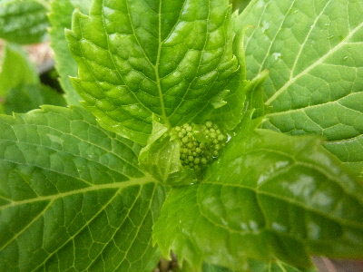
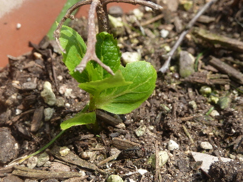
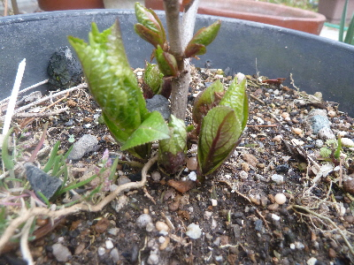
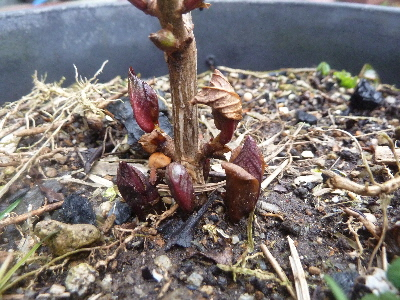
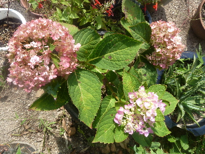

遊びで植物を育てよう
【後の記事】
2018/04/07
アジサイの花がもうできていました。
四季咲きは早いですね。

花の小さいのが付いてました。
どれくらいで色がつくかな？
【ページTOP】 【アジサイTOP】
【園芸TOP】
2018/04/01
挿し木したアジサイの花から新芽がでました。
去年アジサイの花の部分を何本か挿し木したんですが、1本だけ新芽が出ました。

花でも挿し木できるのがわかりました。
でも3本中1本はちょっと微妙かな。
確率は悪いですがまだアジサイの木が大きくないので、今年も花で挿し木しようと思います。
【ページTOP】 【アジサイTOP】
【園芸TOP】
2018/03/11
アジサイの芽がふくらんできました。
緑になった芽がもうすぐ開きそうです。

まめに肥料をやって、ドンドン大きくしよう。
【ページTOP】 【アジサイTOP】
【園芸TOP】
2018/01/28
アジサイに新しい芽が出ています。
冬で葉っぱがなくなって寂しいアジサイですが、株元に新しい芽が出てました。

アジサイってこの芽が大きくなって広がっていくんですね。
今まで１本だったのが一気に増えますね。
大きくなるのが楽しみです。
【ページTOP】 【アジサイTOP】
【園芸TOP】
2017/09/24
霧島の恵 ４輪目です。
２輪目と３輪目がもう終わりですが、4輪目が咲き出しました。

右下が４輪目です。新しい花は色が明るくて綺麗だな。
四季咲きアジサイって、結構続けて咲いていいですね。
【前の記事】
【ページTOP】 【アジサイTOP】
【園芸TOP】
順調に育っています。
【おいしいものを食べよう。】【たくさん寝よう。】
【ソロ活をしよう!】【季節感のあることをしよう。】【動画視聴はほどほどに。】【当サイトの全てのコンテンツは無断転載禁止です。】